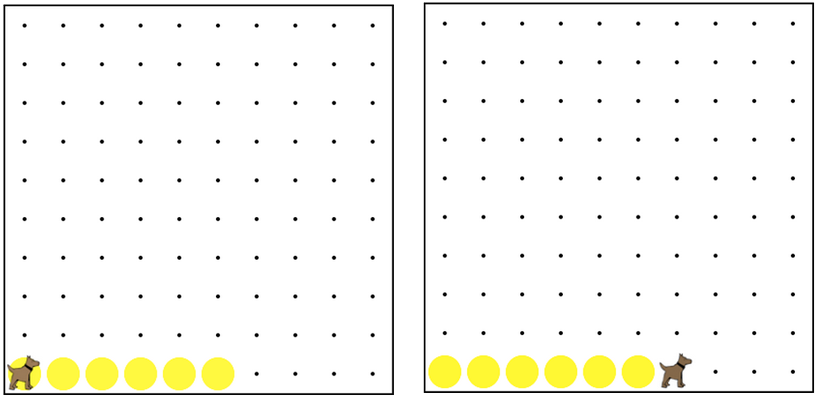

Follow the yellow ball road! Simple.
While Karel is on top of a ball,
Karel should move once. At the end
of the program, Karel will have reached
the end of the road and stop.
This must work for any length road (even 0).
You can assume that the road will end
before Karel will run into a wall.
按照黃球道！簡單。雖然卡雷爾是在球的頂部，卡雷爾應該移動一次。
在節目的最後，卡雷爾將達到道路和停車的結束。
這必須適用於任何長度的道路（甚至為0）。你可以假設，
這條道路將結束之前，卡雷爾將碰壁。

while (CONDITION) { 當 (條件) {
// Code that will run while the CONDITION is true.
// Once the CONDITION is no longer true,
// it will stop.
// 當該條件為正確時，將會執行的程式碼
// 一旦該條件不再正確時
// 此程式碼將會停止
}
/* This moves Karel to a wall */
/* 這使卡羅爾移向一面牆*/
while(frontIsClear()){ 當(前方無障礙物()){
move(); 移動();
}
frontIsClear()
前方無障礙物()
leftIsClear()
左方無障礙物()
rightIsClear()
右方無障礙物()
frontIsBlocked()
前方有障礙物()
leftIsBlocked()
左方有障礙物()
rightIsBlocked()
右方有障礙物()
facingNorth()
面向北方()
facingSouth()
面向南方()
facingEast()
面向東方()
facingWest()
面向西方()
notFacingNorth()
不面向北方()
notFacingSouth()
不面向南方()
notFacingEast()
不面向東方()
notFacingWest()
不面向西方()
ballsPresent()
有球()
noBallsPresent()
沒有球 ()